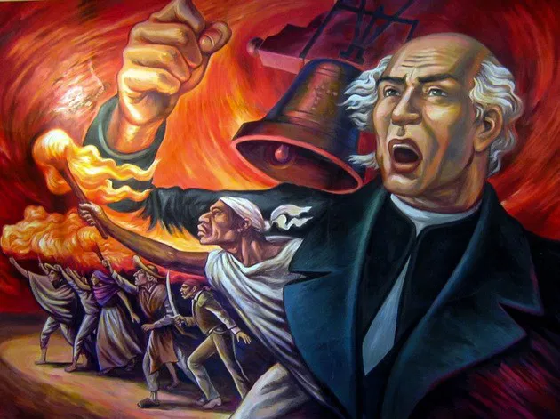
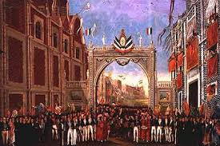
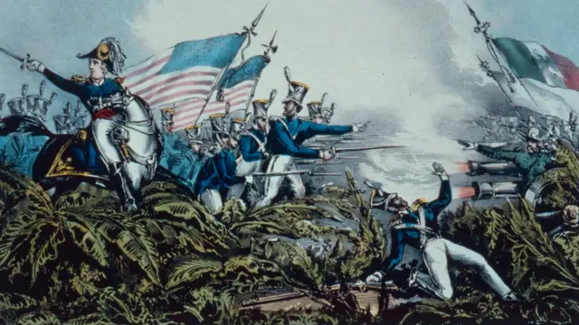
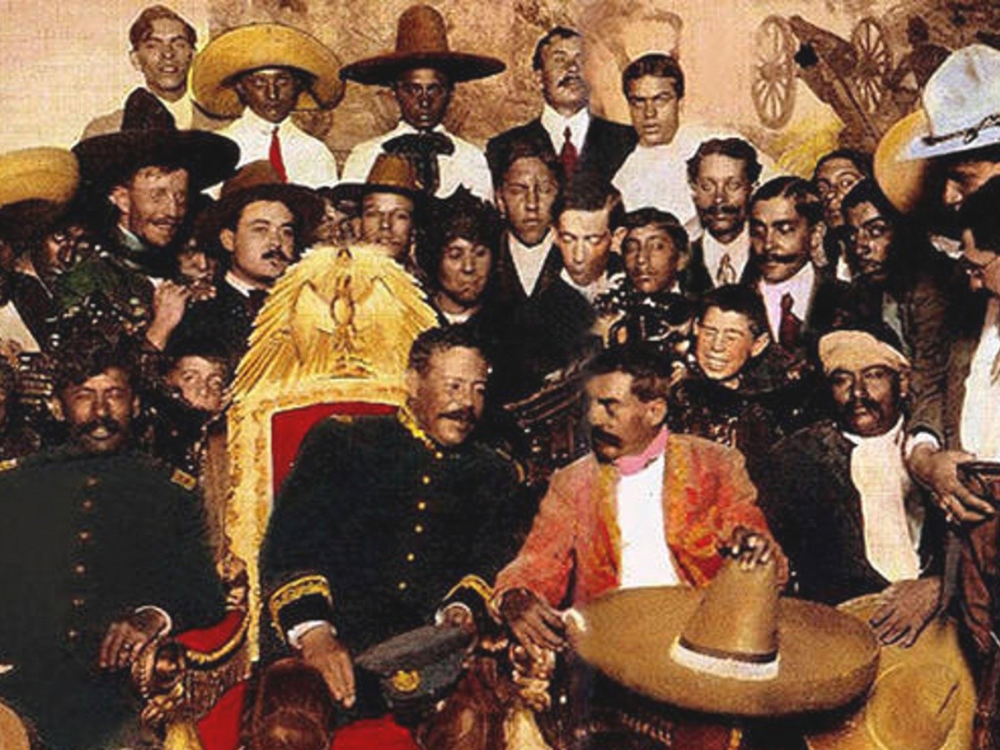
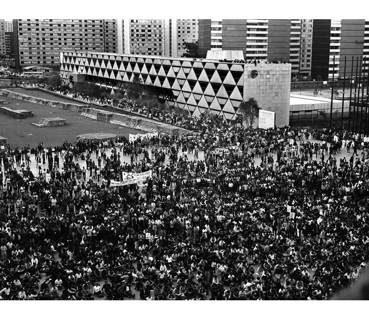
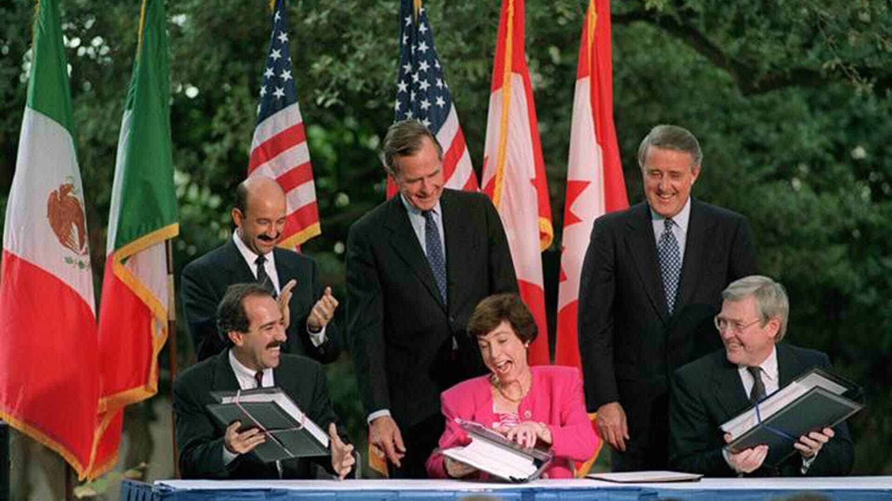
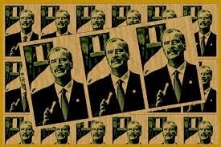

1810
Inicio de la Independencia
El 16 de septiembre de 1810, el sacerdote Miguel Hidalgo y Costilla lanzó el famoso "Grito de Dolores", llamando al pueblo a levantarse contra el dominio español. Este evento marcó el inicio de una guerra que duraría más de una década y que uniría a campesinos, criollos e indígenas en busca de libertad y justicia.
1821
Consumación de la Independencia
Después de años de conflicto, el 27 de septiembre de 1821, el Ejército Trigarante encabezado por Agustín de Iturbide entró triunfalmente a la Ciudad de México. Al día siguiente se firmó el Acta de Independencia, sellando oficialmente la separación de México del imperio español.
1847
Intervención estadounidense
Entre 1846 y 1848, México enfrentó una guerra contra Estados Unidos. Como resultado del conflicto, se firmó el Tratado de Guadalupe Hidalgo, mediante el cual México perdió más de la mitad de su territorio, incluyendo Texas, California, Arizona, Nuevo México y otros estados actuales de EE.UU.
1910
Inicio de la Revolución Mexicana
El 20 de noviembre de 1910, Francisco I. Madero convocó al pueblo a levantarse contra la dictadura de Porfirio Díaz. La Revolución Mexicana fue un conflicto complejo que dio paso a importantes reformas sociales, políticas y agrarias en el país.
1968
Movimiento Estudiantil
Durante el gobierno de Gustavo Díaz Ordaz, miles de estudiantes se manifestaron en la Ciudad de México exigiendo reformas democráticas. El movimiento culminó trágicamente el 2 de octubre en la Plaza de las Tres Culturas en Tlatelolco, donde el gobierno reprimió violentamente a los manifestantes.
1985
Terremoto en la Ciudad de México

El 19 de septiembre de 1985, un terremoto de magnitud 8.1 sacudió la capital del país. Miles de personas perdieron la vida y muchas más quedaron sin hogar. Este desastre puso en evidencia la falta de respuesta gubernamental, pero también mostró la enorme solidaridad de la sociedad mexicana.
1994
Firma del Tratado de Libre Comercio
El 1 de enero de 1994 entró en vigor el Tratado de Libre Comercio de América del Norte (TLCAN), firmado entre México, Estados Unidos y Canadá. Este acuerdo transformó la economía mexicana al abrir sus mercados a productos extranjeros, pero también generó controversias y desigualdades.
2000
Transición democrática
En las elecciones del 2 de julio del año 2000, Vicente Fox, candidato del Partido Acción Nacional (PAN), ganó la presidencia, poniendo fin a más de 70 años de gobiernos del Partido Revolucionario Institucional (PRI). Este hecho marcó una nueva etapa en la democracia mexicana.